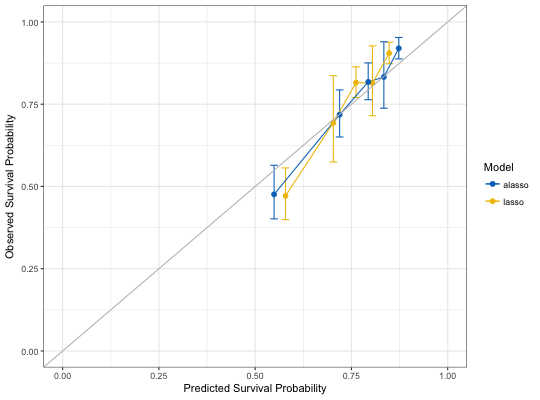

Compare High-Dimensional Cox Models by Model Calibration
hdnom.compare.calibrate(x, time, event, model.type = c("lasso", "alasso", "flasso", "enet", "aenet", "mcp", "mnet", "scad", "snet"), method = c("fitting", "bootstrap", "cv", "repeated.cv"), boot.times = NULL, nfolds = NULL, rep.times = NULL, pred.at, ngroup = 5, seed = 1001, trace = TRUE)
x.x."lasso", "alasso", "flasso", "enet",
"aenet", "mcp", "mnet", "scad",
or "snet"."bootstrap", "cv", or "repeated.cv".TRUE.# Load imputed SMART data data(smart) x = as.matrix(smart[, -c(1, 2)]) time = smart$TEVENT event = smart$EVENT # Compare lasso and adaptive lasso by 5-fold cross-validation cmp.cal.cv = hdnom.compare.calibrate( x, time, event, model.type = c("lasso", "alasso"), method = "fitting", pred.at = 365 * 9, ngroup = 5, seed = 1001)#> Starting model 1 : lasso #> Start fitting ... #> Starting model 2 : alasso #> Start fitting ...print(cmp.cal.cv)#> High-Dimensional Cox Model Calibration Object #> Random seed: 1001 #> Calibration method: fitting #> Model type: lasso #> glmnet model alpha: 1 #> glmnet model lambda: 0.01345781 #> glmnet model penalty factor: not specified #> Calibration time point: 3285 #> Number of groups formed for calibration: 5 #> #> High-Dimensional Cox Model Calibration Object #> Random seed: 1001 #> Calibration method: fitting #> Model type: alasso #> glmnet model alpha: 1 #> glmnet model lambda: 0.05055676 #> glmnet model penalty factor: specified #> Calibration time point: 3285 #> Number of groups formed for calibration: 5 #>summary(cmp.cal.cv)#> Model type: lasso #> Calibration Summary Table #> Predicted Observed Lower 95% Upper 95% #> 1 0.5787402 0.4712308 0.3991153 0.5563768 #> 2 0.7028772 0.6932137 0.5743867 0.8366233 #> 3 0.7617722 0.8156289 0.7703284 0.8635934 #> 4 0.8046333 0.8140415 0.7148020 0.9270589 #> 5 0.8479692 0.9049829 0.8728166 0.9383345 #> #> Model type: alasso #> Calibration Summary Table #> Predicted Observed Lower 95% Upper 95% #> 1 0.5490816 0.4759925 0.4014625 0.5643587 #> 2 0.7193136 0.7182540 0.6502817 0.7933313 #> 3 0.7934671 0.8176343 0.7636014 0.8754906 #> 4 0.8341466 0.8326544 0.7378270 0.9396693 #> 5 0.8728679 0.9196582 0.8876358 0.9528358 #>plot(cmp.cal.cv)